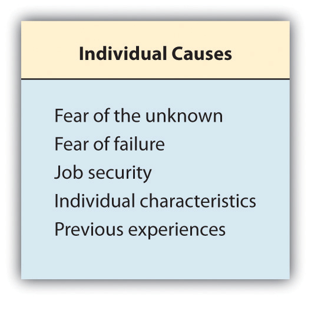

I long to accomplish a great and noble task, but it is my chief duty to accomplish small tasks as if they were great and noble.
Helen Keller
A journey of a thousand miles begins with a single step.
Lao-Tzu
A Shining Star
In the morning, Jackson gives a lot of thought to what he is going to wear to work. Not only does he want to look nice, but he also finds that clients respect him more and look to him for answers when he dresses up. His company has a casual policy, but Jackson always wears at least dress pants and a button-up shirt. The program director wears the same outfit, and Jackson wants to be promoted some time, so he assumes it is best to look the part.
Another thing Jackson does for career success is to have an awareness of his power position. To create a stronger power position, Jackson is helpful to his colleagues, has a positive attitude, shows his problem-solving ability, and handles conflicts with people well. He also rarely complains. These are all human relations skills he has learned over his ten-year career. Jackson is a positive, upbeat person who others like to be around. He is polite, friendly, and confident, but not in an egotistical way.
Jackson’s manager says he is a prime candidate for a promotion. He is dedicated, commits himself to client satisfaction, and tries to continuously learn new things. When a deadline is looming, Jackson stays late to help his colleagues finish projects. Jackson always recognizes people’s contributions to the organization. Jackson epitomizes someone who is emotionally intelligent, which in turn, creates better relationships and thus more career opportunities.
Like Jackson, you can do many things to achieve career success, no matter what career you choose. It is impossible to achieve career success without human relations skills. This chapter will discuss some of the strategies, such as understanding power positions, dealing with change, and dressing and networking that can help propel anyone to have positive human relations and high emotional intelligence, which are both ingredients to career success.

Remember our ongoing discussion on emotional intelligence skills and their necessity for career success? Here is how emotional intelligence skills tie into our chapter on career success.
Throughout this book, we have discussed the factors that create good human relations with our work relationships and personal relationships. When you started reading this book, you learned how your personality, attitude, and self-esteem could impact your human relations with other people. We also talked about the following:
With an understanding and practice in all of these areas, we can become successful people in our careers. This is the focus of the chapter—the skills it takes to be productive individuals through positive human relations. The first step is developing an understanding of how we can use power both at work and in our personal life.
Understanding power and power structure in our organizations can assist us in being more successful in our career. PowerRefers to our ability to influence others and convince them to do what we want them to do. refers to our ability to influence others and convince them to do what we want them to do. Power is different than influence, in that influenceThe application of the power we have to get people to do what we want them to do. is the application of the power we have to get people to do what we want them to do. Although it may seem this only applies to managers, we all use power in a variety of ways, both in our personal and professional lives. For example, Abbey may use her power to convince Amy they should have sushi for dinner tonight, but that doesn’t mean that Amy thinks it is the right thing to do. It isn’t until Abbey uses her influence that Amy agrees to eat sushi. Please keep in mind that power is not a negative thing if used in the correct way. Power and influence, ultimately, are what allow things to get done in our organizations.Mind Tools Website. (n.d.). French and Raven’s five forms of power, accessed March 12, 2012, http://www.mindtools.com/pages/article/newLDR_56.htm Whether or not we are leaders in our organization, power can come in many forms. A study by John French and Bertram Raven in 1959 identified the ways leaders can influence others.French, J. R. P., & Raven, B. (1959). The bases of social power. In D. Cartwright & A. Zander (Eds.). Group dynamics. New York: Harper & Row. They include the following:
Again, we feel it is important to point out there is nothing wrong with utilizing power to make things happen; the concern is when an individual is power-compulsive. Power compulsiveA person’s personality has a lust for power and may use power for personal gain. means the person’s personality has a lust for power and may use it for personal gain. This is the opposite of the power-shyA personality characteristic of someone who prefers not to be in charge of things and is not comfortable using power. personality, who prefers not to be in charge of things and is not comfortable using power. Power-shy individuals may not be positive either, in that at some point, people must be willing to use power to make decisions. Keep in mind, we all use power, no matter what title we hold at work.
Figure 13.1

Managers may use various types of power depending on the person they are trying to influence. This figure shows some of the strategies used for influence.
Source: David Kipnis et al., “Patterns of Managerial Influence: Shotgun Managers, Tacticians, and Bystanders,” Organizational Dynamics 12, no. 3 (New York: American Management Association, 1984), 62.
As mentioned earlier, the idea of “power” often seems negative, but we can use power in an appropriate way when getting ahead in our organizations. This is called power positionThe use of power in an appropriate way when getting ahead in an organization.. Power position comes from the concept of feng shui, where the power position is the physical position in the room for a business meeting. In this position, the person can see all entrances to the room and is seated against a wall. Because of this, they are said to be the center of attention and thus in the power position. Our meaning here refers to your ability to use conscientious techniques that can lead to personal and professional organizational growth; these also happen to be the characteristics needed for career success, and we can tie into emotional intelligence. Techniques that may help increase your power position at work include the following:
This somewhat silly (with typos) video shows the types of power.
In addition to the techniques, we can think about position power as a set of behaviors we exhibit on a daily basis. These five behaviors can help us increase our power position at work. We can think about the acronym POWER to remember these behaviors:Dawson, J. (2007–8) What good leaders do. ADI Performance website, accessed March 13, 2012, http://www.adiperformance.com/08/pub_article03.html
Having an understanding of the types of power and how to improve your own power position at work can increase your human relations at work and, therefore, your success—and probably make work more enjoyable, too!
Since this chapter is all about professional growth, it makes sense to discuss planning strategies used by people who want to further their careers. Each of these involves and requires emotional intelligence skills discussed in Chapter 2 "Achieve Personal Success" and throughout the book. Having emotional intelligence skills, as you may recall, is even more important than having a high IQ.Goleman, D. (n.d.). Emotional intelligence. New York Times, accessed May 23, 2012, http://www.nytimes.com/books/first/g/goleman-working.html Knowing ourselves and the ability to manage ourselves is the core of this section in the form of a discussion on what kinds of human relations behaviors are necessary to achieve career success.
How to get promoted must be one of the questions managers are asked the most. Often earning a promotion or movement into a higher level is dependent on not only one’s skills and abilities but also certain behaviors. According to Long Yun Siang of Career Success for Newbies,Siang, L. Y. (2006). How to get promoted. Career Success for Newbies, accessed March 13, 2012, http://www.career-success-for-newbies.com/how-to-get-promoted.html there are several characteristics people have that can help them earn a promotion, and these areas fall into one of three categories: plan, attitude, and action. They are as follows:
Besides understanding the skills, attitudes, and abilities needed for promotion, learning how to handle change is a great way to earn a promotion and obtain career success. We discussed change in Chapter 2 "Achieve Personal Success"; because it’s necessary both from a personal and career perspective, it is good to discuss it here from a career approach. Oftentimes, people get too comfortable in their job, which does not allow them to move upwardly within the organization. We know that change is a continual process, and the more comfortable we can get, the better, especially to experience continued success at work. But why do people avoid change in their careers or jobs and why would they avoid taking on more responsibility to obtain a promotion? Figure 13.2 gives some examples.
Figure 13.2
When considering making a career change, whether it be to move to a different company or to earn a promotion, there are many reasons why people may be afraid of such a change.
It is important to identify the reasons why you may avoid change. When we identify them and our behaviors, we can begin to understand why we behave the way we do, which is a key component to self-knowledge and emotional intelligence skills. Another aspect to career success is knowing basic etiquette, which we will discuss next.
Go to http://images.barnesandnoble.com/pimages/resources/pdf/Change_Quiz.pdf and take the quiz on change. Then answer these questions:
Perhaps the most important components to career success are how we manage our reputation and the impression we give to others both in person and online. Learning how to manage our reputation can be a key ingredient to developing good human relations, which often results in career success. Although much of this will be a review, it is important to discuss key elements to making a good impression in a professional environment.
An introduction to a person is possibly one of the most important aspects to etiquette. This nonverbal behavior can send positive or not-so-positive messages to a person with whom you want to make a good impression.Lorenz, K. (2009, September 9). Six tips for a perfect handshake. Career Builder, accessed March 15, 2012, http://www.careerbuilder.com/Article/CB-431-Getting-Hired-Six-Tips-for-a-Perfect-Handshake/ Here are the components to a good handshake and introduction:
Good handshakes and introductions are important, but they also take practice. Often, people are too worried about the impression they are making to focus on their handshake, eye contact, and other aspects. The more comfortable you can get with this, the more second nature it will become and the better your human relations will be!
Often a time will come when you must have a business dinner with your supervisor or colleagues. When we dine alone or with our family, sometimes we do not pay as much attention to table manners as we should. Showing you have proper table manners in a business setting not only conveys high emotional intelligence but also can create positive relationships with others. Let’s discuss this as if we are starting a dinner from the beginning.

Sometimes the amount of dinnerware can be overwhelming! For forks, use the last one out and work your way in. Make sure the napkin goes on your lap. Also be aware, your bread and butter plate will always be on your left, while your glasses will be on your right.
First, it would be proper to make sure the host is seated before you sit. Unless the host is male, in which case he would wait until all females are seated until he takes his seat. Likewise, in any situation, such as a job interview, you should never sit unless invited. Next, you will want to put the napkin on your lap. Avoid wiping your face or nose with the napkin. If you need to get up, leave the napkin on either side of your plate.
Try to order within the same price range as your host. Never order the most expensive menu item. Also avoid ordering alcohol unless the host is ordering it, and even then, never drink more than your limit in a business situation. When food is served, you should not begin eating until everyone has received their food.
Any food dish on the left is yours; any glass that is yours is on the right. Most silverware is set so the one you will use first is on the outside, and you work your way in. For example, the appetizer fork might be on the outside, then the salad fork, then the dinner fork. When you are finished with your meal, rest the silverware crosswise on your plate to indicate you are done.

Silverware resting together indicates to the server that you are finished with your meal.
If you are in a situation where food should be passed, always pass from left to right. Avoid reaching past people’s plates to get something. If someone asks you for salt and pepper, always pass both together, even if both were not requested. It goes without saying, but don’t talk with your mouth full or play with food on your plate. If you don’t like something, try to take a few bites, but it is ok to leave food. If you have special dietary restrictions—for example, if you are a vegetarian—don’t make a big deal out of it and just avoid eating those things you wouldn’t normally eat.
Always say please and thank you to anyone who does something for you, such as refilling your water or removing your plate. These basic manners can go a long way in showing politeness.
When the check comes and there is no obvious host, reach for it. If there is an obvious host, such as your supervisor had told everyone he was going to take the department to dinner, it is fine not to reach for the check. If people are splitting the check, it is normal to split it evenly, unless of course people had significantly different-priced items. For example, if one person had only a salad and another person had the porterhouse steak, splitting might not be appropriate.United States dining etiquette Guide, accessed March 15, 2012, http://whatscookingamerica.net/Menu/DiningEtiquetteGuide.htm Likewise, if you had drinks but someone else didn’t, offering to pay more would be appropriate. It is also customary to tip 15 to 20 percent, and not doing so would be considered in poor taste. Please note that dining etiquette discussed here is specific to the United States. Before you travel, consider doing research on proper etiquette.
Dress is another consideration with etiquette. Dress will vary greatly from region to region. For example, in the Seattle area, it is normal for many people to wear jeans to work, while in other parts of the country, this would be considered inappropriate. When deciding what to wear, it is always best to be a bit overdressed than underdressed. For job interviews, jeans or shorts would rarely, if ever, be acceptable. Normally in job interviews, dressing one “step up” from what people wear at the company is a good rule of thumb.
Showing too much skin or revealing tattoos or facial piercings in some work environments may prevent upward movement in a company, as it sends the wrong message to your boss, or future boss (fair or not). In a study by Peter Click, women in high-level positions who dress in what is seen as sexy attire are viewed as less competent, regardless of their skill sets.Sinberg, L. (2009, July 22). What not to wear to work. Forbes, accessed May 21, 2012, http://www.forbes.com/2009/07/22/office-fashion-sexy-forbes-woman-style-clothes.html Fair or not, there are many unspoken rules about what is appropriate and what is not. The best thing to do is to look at what the successful people around you are wearing. For example, if all of the men in the workplace wear suit jackets and rarely take them off, this is an indicator of expected workplace dress. If all of the women in the office wear closed toed shoes and leave the flip flops at home, it might be a good idea for you to do the same as well. Personal style and individuality are important, but in some professions, it makes sense to err on the side of caution when choosing a work wardrobe.

Looking at your phone while talking with someone is the same thing as turning your back to them in the middle of a conversation.
Another important thing to mention is the use of technology. Although many people do it, the increased use of technology has actually made people more rude; according to an Intel survey, 9 of 10 Americans report they’ve seen others misuse technology and 75 percent agree that mobile etiquette is worse than it was a year ago.Bruzzese, A. (2011, March 27). Technology increases rudeness quotient. TribLive Business News, accessed March 15, 2012, http://www.pittsburghlive.com/x/pittsburghtrib/business/s_729376.html Here are some examples of basic etiquette when it comes to technology:
Another note related to technology is the use of social media and the Internet.
Many companies pay hundreds, even thousands of dollars every month to monitor and clean up their online reputations. The process of monitoring your online reputation is called reputation management. Reputation.com, one of hundreds of firms that specializes in “fixing” online reputations, has become popular for companies looking to enhance their online image. Reputation management isn’t just for companies—individuals are using these services to make unflattering things on the Internet about them disappear.Tozzi, J. (2008, April 30). Do reputation management services work? Businessweek, accessed May 22, 2012, http://www.businessweek.com/smallbiz/content/apr2008/sb20080430_356835.htm
Anything posted on the Internet, from a picture on Facebook to a comment on a blog, will be in cyberspace indefinitely. Consider the case of a New York professor. Eight years earlier, he had been charged with receiving grant money wrongfully. If you googled his name, you would find a press release listing this charge as one of his name’s top search results, even though he had paid the $2,000 fine.Bilton, N. (2011, April 1). Erasing the digital past. New York Times, accessed May 22, 2012, http://www.nytimes.com/2011/04/03/fashion/03reputation.html?pagewanted=all Not exactly something he would want a potential or current employer to see! This is exactly why it is important in career development to be aware of the kinds of things you post—whether you are looking for a job or already have a job. For example, thirteen Virgin Airlines employees were fired for a chat they had on Facebook about the plane’s safety, along with negative comments about customers.Bloomberg News. (2008, November 1). Facebook chat gets 13 Virgin Airlines employees fired, accessed March 22, 2012, http://www.nydailynews.com/news/money/facebook-chat-13-virgin-airlines-employees-fired-article-1.335199 In yet another example,Popkin, H. (2009, March 23). Twitter gets you fired in 140 characters or less. MSNBC.com, accessed May 22, 2012, http://www.msnbc.msn.com/id/29796962/ns/technology_and_science-tech_and_gadgets/t/twitter-gets-you-fired-characters-or-less/ a job seeker posted the following to Twitter: “Cisco just offered me a job! Now I have to weigh the utility of a fatty paycheck against the daily commute to San Jose and hating the work.” And Cisco, who regularly monitors the Internet for mentions of their name (reputation management), replied, “Who is the hiring manager. I’m sure they would love to know that you will hate the work. We here at Cisco are versed in the web.” Needless to say, the job offer to this future employee was rescinded.
Websites that allow for professional networking can be a great tool but can also be detrimental. For example, BG, a natural gas company, had an employee post his resume on LinkedIn and clicked the “job seeker” box. When his employer saw this, he was fired for expressing interest in other job opportunities, along with his posting of disparaging comments about his employer.Nichols, S. (2012, January 5). Employee challenges dismissal after posting CV on LinkedIn. V3 Technology News, accessed May 21, 2012, http://www.v3.co.uk/v3-uk/news/2135631/claims-firing-linkedin-cv-posting
So how exactly can you monitor your online reputation? Here are some tips:
Managing your online reputation can make sure that when an employer or potential employer sees your online persona, they are seeing the side you want them to see. It will show them that you represent the company in a positive light, which can enhance career success.
This video discusses the importance of managing your online reputation.
We should discuss other parts to etiquette that would be considered general politeness and show professionalism, both skills that create positive relationships with others. Some of these include the following:
Understanding and following general etiquette can help boost your career. People who do not have manners may not be as respected, and as a result, they may not be promoted or experience career growth. Etiquette is part of social intelligence skills, which—as we discussed in Chapter 2 "Achieve Personal Success"—are proven to help people attain career success. Speaking of career growth, how does one actually grow in their career? That will be the topic of Section 13.4 "Career Growth: Personality and Strategies".
While this section doesn’t discuss job searching, resumes, and cover letters (since you do that in other classes), we will discuss tips for developing a career after you already have the job. First, we already know there are some personality characteristics that tend to be required for career success. Please note that this is different than behaviors, which we discussed earlier. Personality is a stable set of traits, while behavior is an expression of those traits in different circumstances. Although personality traits tend to be stable over time, we can change our personality traits. For example, Phil’s personality may normally not be career driven and motivated. This could come out in the way he relates to others in his organization. But suppose Phil finds a job he really likes. His behavior can change in that his satisfaction makes him confident, relaxed, and able to work well in teams. So sometimes when we change our behavior, our personality can change—and our human relations can change, too.
Some of the personality characteristics for success might include the following:
Of course this list is not exhaustive, but we have discussed many of these throughout the book. But how do you develop these skills? First, being aware of your own need for self-improvement can go a long way to improving these skills. Assume Steve isn’t a very good listener and he identifies this as an area for improvement. Steve then needs to make a conscious effort to improve his listening skills. Having an awareness of this need and then putting together an improvement plan is a step in the right direction. But until we are able to recognize our strengths and weaknesses, we are not able to improve upon them. In another example, assume Duana realizes she gets very stressed at work, and that stress causes her to be short with people. Learning how to manage stress better can create better relations with other people.
Human relations skills allow us to better deal with situations and people (us included) who are imperfect. Human relations—and emotional intelligence—has shown to be twice as important to determine excellent performance at work.Goleman, D. (2004, January). What makes a leader? Harvard Business Review, accessed May 23, 2012, http://hbr.org/2004/01/what-makes-a-leader/ar/1 Not every work situation will be great. Bosses will be difficult to work for, we will have colleagues who we don’t enjoy working with, and personal relationships will have their ups and downs. How we handle these situations is the true measure of our human relations skills. How well can we handle situations that are difficult or learn to make decisions that may be challenging? By employing the human relations information throughout the book, we can begin to analyze our own strengths and weaknesses in each of these areas. If we have an “I’m fine” attitude, we are not able to improve, limiting our potential for positive human relations, thus, limiting our career success.
To get better at human relations, we need to hone on our strengths and weaknesses (self-awareness skills) and understand what human relations skills we should and could improve upon. Those areas we identify as our strengths, we need to continue to develop those strengths.
Sample assessment of strengths and weaknesses:
This example shows how you might assess your own strengths and weaknesses in relation to your own human relations. As we know from this chapter, first acknowledging the need to further develop, then making efforts to improve the skills are the first steps to a positive human relations—and a successful career.
Soon, you will be taking final exams, working on final projects, and moving on to the next set of classes—or maybe a new career. Don’t think of your journey for improving emotional intelligence skills as ending; really, it is just beginning. As you begin the process of self-assessment and self-awareness, you can do this more thoroughly because you know the components of good human relations.
Stone-cold millionaire Larry Beachham explains why having a mentor can help your career.
One of the ways we can develop the skill of recognizing your strengths and weaknesses is to utilize a mentor. A mentorSomeone who is a trusted counselor or teacher. is someone who is a trusted counselor or teacher. Sometimes, companies have formal mentorship programs. Often, though, the best mentorships come from relationships that form over time. For example, when Paul started working at Ascent Corporation, he knew he wanted to move up the company ranks but didn’t know how. When Paul was put on a project with Beth, a managing director, he knew that he wanted to talk with her to find out how she made it to that position. Paul felt nervous approaching Beth at first because she was so busy. But he decided to take the risk and invited her to have coffee after their meeting. After that, they began to speak weekly and Beth took an interest in helping Paul in his career. Together, the two worked to develop strategies and objectives for Paul’s career. When he had questions about his career path, she helped him. When a position opened up, Beth coached Paul on the interview and he was promoted.
Make sure you continue learning. Taking seminars and courses can help make you more marketable in your field. Since most fields change on a regular basis, we must continually update our skills to build upon what we already know and learn new things.
Robert is a supervisor at a large bottling company. His job includes managing safety and breaks and setting schedules for his twenty-five employees who use forklifts and other machinery to package and move filled bottles on to trucks for delivery. Robert has career goals with the organization. First, he would like to become the bottling manager, which is one step up from his current job. In five years, Robert would like to become the director of operations who oversees the entire factory floor.
Robert is an excellent, well-liked manager by his employees, but when it comes to his supervisors, he is very quiet. He never mentioned the fact that his shift had one hundred accident-free days in a row or that productivity had increased 10 percent since he took over the shift. Robert is also a bit shy, so he avoids any kind of social interaction such as the holiday party.
While Robert wants to be promoted in the organization, he knows he lacks some of the skills needed to do the job, such as the ability to put together budgets. Because of this, he has identified two courses he would like to take to improve his financial skills.
Robert was recently asked to review the operational processes during his shift and excelled at it. In fact, because of the shifts’ awareness, Robert motivated his staff to change some of the procedures to be more cost effective. Since Robert would like a promotion, he knows he should assess his strengths and weaknesses.
Consider each of the following topics discussed in this chapter and discuss Robert’s strengths and weaknesses in each of the following areas (making reasonable assumptions is fine). Then create a plan addressing what Robert can do to improve in each area: